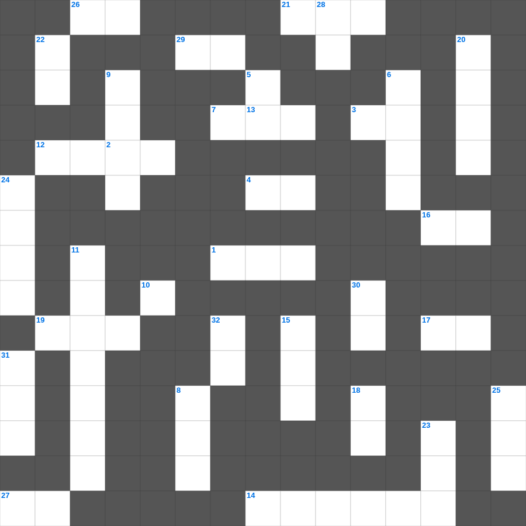

요한이서·삼서 마스터 100
📌 서비스 정의
십자가로세로는 교회 주보와 주일학교에서 사용할 수 있는 성경 기반 가로세로 퍼즐 서비스입니다. 성경 인물, 사건, 핵심 구절을 바탕으로 제작되었습니다. 온라인 풀이 및 인쇄 기능을 제공합니다.
요한이서·삼서를 주제로 한 요한이서·삼서 낱말 퍼즐입니다. 35개의 단어를 맞춰보세요! 가로세로 낱말 퍼즐 형식으로 요한이서·삼서의 핵심 내용을 재미있게 복습할 수 있습니다.

📝 가로 힌트
1. 여인 중에 어여쁜 자야 네가 알지 못하겠거든 양 떼의 이것을 따라가라
2. 요한이서 1장 4절: 자녀들이 진리 안에서 행하는 것을 보고 얻은 것
3. 나의 힘이신 여호와여 내가 주를 이것 하나이다
3. 너희는 하나님을 본받는 자가 되고 그리스도께서 너희를 사랑하신 것 같이 너희도 이것 가운데서 행하라
3. 사람을 경책하는 자는 혀로 아첨하는 자보다 나중에 더욱 이것을 받느니라
4. 여호와를 경외하는 것이 이것의 근본이거늘
7. 형제들아 너희는 선을 행하다가 이것하지 말라
7. 우리가 선을 행하되 이것하지 말지니
12. 지혜에 관한 지식이 더 유익함은 지혜가 그 지혜 있는 자를 이것 하기 때문이니라
13. 한 번 죽는 것은 사람에게 정해진 것이요 그 후에는 이것이 있으리니
14. 그들이 이르기를 우리는 그리로 이것 하겠노라 하였으며
16. 하나님은 외모를 보지 않고 이것을 보시느니라
17. 지혜자의 마음은 오른쪽에 있고 우매자의 마음은 이것에 있느니라
19. 정탐꾼들이 포도를 베어온 골짜기 이름
21. 한 나병환자를 고치신 후 아무에게도 말하지 말고 가서 이것에게 네 몸을 보이라 하심
26. 이 사람의 반역을 따라 멸망을 받았도다
27. 잘 다스리는 장로에게 돌려야 할 존경의 정도
29. 여호와는 나의 이것이시니 내게 부족함이 없으리로다
📝 세로 힌트
5. 그리스도 예수의 사람들은 육체와 함께 그 정욕과 이것을 십자가에 못 박았느니라
6. 탕자의 비유에서 둘째 아들이 먼 나라에 가 한 일: 이것 하여 그 재산을 낭비하더니
8. 아모스가 본 환상 중 수직을 재는 도구
9. 귀환할 때 가져간 느부갓네살이 뺏어갔던 것들
10. 내가 곧 이것이요 진리요 생명이니 나를 말미암지 않고는 아버지께로 올 자가 없느니라
11. 바울이 갈라디아 인들을 위해 다시 이것 하는 해산의 수고를 하노라 함
15. 사사 에훗은 어느 지파 사람인가
18. 너희의 하나님 여호와를 이것하라
20. 에스라가 저녁 제사를 드릴 때 무릎을 꿇고 한 것
22. 몸이 하나요 성령도 한 분이시니 이와 같이 너희가 부르심의 한 이것 안에서 부르심을 받았느니라
23. 게으르게 행하고 우리에게서 받은 전통대로 행하지 아니하는 모든 형제에게서 이것하라
24. 모세가 늦어지자 백성들이 만든 우상
25. 바울이 고린도 교회에 편지를 보낸 이유 중 하나: 이 사람의 집 편으로 들은 분쟁 소식 때문
28. 마귀를 비유한 동물
30. 장로의 회에서 이것 받을 때에 예언을 통하여 받은 것을 가볍게 여기지 말며
31. 이스라엘 백성이 회개하며 모였던 장소
32. 너는 마음을 다하여 여호와를 신뢰하고 네 이것을 의지하지 말라
🧩 이 퍼즐에서 배우는 내용
이 퍼즐은 요한이서·삼서 마스터 100의 핵심 단어와 개념을 자연스럽게 복습할 수 있도록 구성되었습니다. 주일학교 수업이나 개인 성경공부에서 학습 내용을 점검하는 용도로 바로 활용할 수 있습니다.
🧑🏫 교회 교육 자료 활용
이 퍼즐은 주일학교 교재 추천 자료로 활용할 수 있고, 주일학교 주보에 넣기 좋은 분량으로 구성되어 있습니다. 수업용 주일학교 교안에 활동지로 붙이거나, 예배 후 복습용 주일학교 공과교재로 바로 사용할 수 있습니다.
🏷️ 키워드
요한이서·삼서 낱말 퍼즐, 요한이서·삼서, 십자가로세로, 성경퀴즈, 말씀퀴즈, 가로세로퍼즐, 주일학교 교재 추천, 주일학교 주보, 주일학교 교안, 주일학교 공과교재